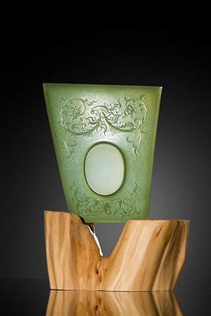

作者：俞挺 中国玉石雕刻大师
规格：16.5*14.3cm 66g
《清隽—当代玉雕名家精品专场》

作品由青玉雕琢打磨而成，颜色清雅，质地均一，玉质细腻油润。整体造型不拘一格，不对称的形状和巧妙的弧线让作品微带古意，在浮雕缠枝花纹装饰的同时阴刻蜷曲卷草纹，纹饰精美，更使得观者能同时观赏两种不同风格配合带来的视觉享受，作品抛光细致，工艺精湛，透光照之，令青玉的材质之美展露无遗，配合原木底座，让厚重端方和轻灵透亮形成鲜明对比，更增添了薄胎的美态。